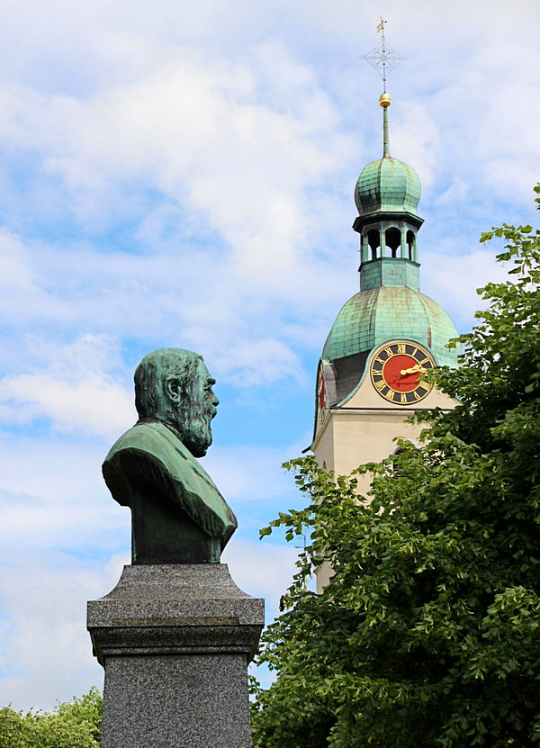

«War das früher mal ein Kloster?» Diese Frage stellen viele Besucherinnen und Besucher, wenn sie in den Kreuzgang der Stiftskirche St. Leodegar in Schönenwerd treten. Der Kreuzgang ist zwar im romanischen Stil mit Tonnengewölbe und Rundbogenarkaden gebaut, stammt aber in der jetzigen Form aus dem frühen 17. Jahrhundert. Obwohl ein Kloster bereits 778 urkundlich bezeugt ist, gehört der Kreuzgang nicht zu einer Klosteranlage, sondern zu einem Chorherrenstift: einer Gemeinschaft von Priestern ohne Mönchsgelübde.
Büste von Carl Franz Bally mit dem Turm der Stiftskirche. (Bild: Adrian Suter)
Kleinod mit Geschichte
Die Stiftskirche ist die älteste noch bestehende Kirche im Kanton Solothurn, um 1040 als dreischiffige, frühromanische Basilika erbaut. Mauern und Pfeiler stehen noch heute wie damals, aber im Lauf der Jahrhunderte hat die Kirche einige Veränderungen mitgemacht: Die ursprünglichen zwei Türme waren um 1663 so beschädigt, dass sie abgetragen werden mussten. Ein neuer einzelner Westturm wurde 1676 bis 1679 vor das Kirchenportal gebaut, so dass dem Kircheneingang heute eine Vorhalle im Erdgeschoss des Turmes vorgelagert ist. Wichtige bauliche Veränderungen hat die Kirche auch innen erfahren. Die barocken Stukkaturen mit ihren verspielten Formen geben dem Raum eine Leichtigkeit, die für romanische Bauten ungewohnt ist. Bekannt ist die Kirche auch für ihre Marienstatue, die in früheren Jahrhunderten viele Pilger anzog. Mit ihr ist eine schöne Legende verbunden: Sie sei, so wird berichtet, in Bern während der Reformation in die Aare geworfen und in Schönenwerd an Land geschwemmt worden. In Bern herrschte Bildersturm, Heiligenbilder und Statuen wurden aus den Kirchen entfernt und zum Teil zerstört. Die Chorherren stellten die aufgefundene Statue auf den Hochaltar, doch über Nacht habe sie von selbst ihren Platz gewechselt und sei auf der Empore gestanden. Man stellte sie wieder auf den Hochaltar, und wieder wanderte sie über Nacht. Beim dritten Mal sahen die Chorherren dies als Zeichen an, dass die Statue auf der Empore verehrt werden wolle. In der Folge wurde Schönenwerd zum Marienwallfahrtsort – nicht so bedeutsam wie Einsiedeln, aber doch über die Region hinaus bekannt. Die Statue wurde in unterschiedliche Gewänder gekleidet, je nach Zeit des liturgischen Jahres. Die Statue steht noch heute an ihrem Ort, die Gewänder sind im Ausstellungsraum der Stiftskirche zu besichtigen. Und einmal im Jahr wird die Marienkapelle noch liturgisch verwendet: Am 15. August feiert die Gemeinde dort die Vesper mit Kräutersegnung.
Kulturkampf und Aufstieg der Industrie
Im 19. Jahrhundert wurde aus dem Marienwallfahrtsort ein bedeutender Ort des Kulturkampfes. Man sagt, dem Schuhfabrikanten Carl Franz Bally seien vor allem die vielen katholischen Feiertage ein Dorn im Auge gewesen, deswegen habe er sich zum «Pfaffenschreck» entwickelt. Er war ein durchaus mit dem Christentum verbundener Mensch, aber zugleich ein liberaler Geist, der sich keine Vorschriften machen lassen wollte, weder für sein Denken noch für sein Wirtschaften. Parallel zum Aufstieg seiner Schuhfabrikation sank die Bedeutung des Schönenwerder Stiftes: Das Schulwesen wurde verstaatlicht, den Chorherren Misswirtschaft vorgeworfen. Die Solothurner Regierung hob das Stift 1874 auf. Daraufhin übernahm die Christkatholische Kirchgemeinde die Kirche, die Stiftsgebäude und den grossen Kirchenvorplatz, das Bühl. Carl Franz Bally selbst wurde christkatholisch und ermöglichte 1889 durch grosszügige finanzielle Unterstützung eine Renovation der Stiftskirche. Seit 1888 finden in der Stiftskirche auch regelmässig reformierte Gottesdienste statt. Die römisch-katholische Kirchgemeinde war im 19. Jahrhundert zu einer gemeinsamen Nutzung nicht bereit. Zwar läuteten die Kirchenglocken weiterhin, doch nicht mehr sie, sondern die Fabriksirene der Firma Bally bestimmte den Rhythmus des Dorflebens. Der Industriebetrieb erlangte internationale Bedeutung, mit Niederlassungen in Buenos Aires, Montevideo und Paris. In Paris arbeitete auch Paul Gugelmann als Schuhdesigner für Bally, der im Kreuzgang der Stiftskirche aufgewachsen war und mit seinen «poetischen Maschinen» Bekanntheit als Künstler erlangte. Anderthalb Jahrhunderte lang prägte die Firma Bally das Dorf. Doch Ende des 20. Jahrhunderts wurde die Produktionsstätte in Schönenwerd geschlossen und der Firmensitz ins Tessin verlegt. Von Ballys Präsenz zeugen aber weiterhin die Stiftung Ballyana mit ihrer Sammlung Industriekultur, das Bally-Schuhmuseum und der Ballypark.
Dr. Adrian Suter ist Pfarrer an der Stiftskirche Schönenwerd und Oberassistent am Departement für Christkatholische Theologie an der Universität Bern.
Zur Vertiefung:
- www.stiftskirche.ch
- Clauspeter Scalabrin (Hg.): Pionier und Pfaffenschreck. Die Memoiren des Carl Franz Bally, Baden 2009.
- Gottlieb Loertscher: Stiftskirche Schönenwerd SO (Schweizerische Kunstführer, 44 / 434), Bern 1988.